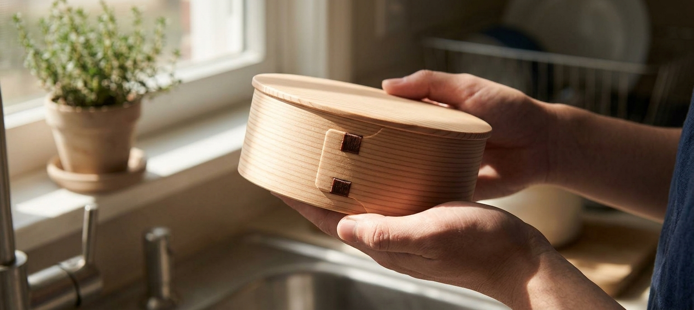
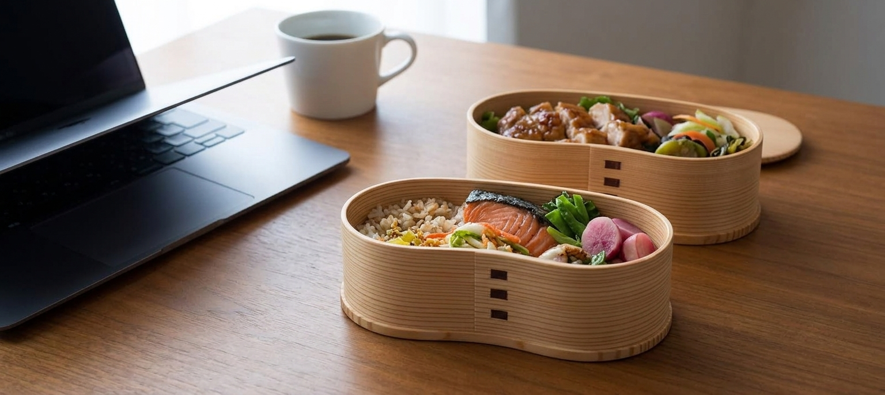
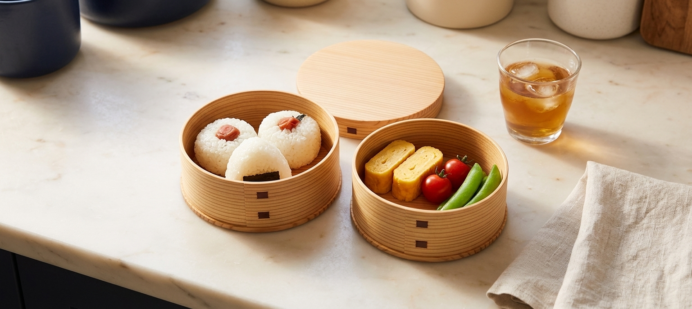
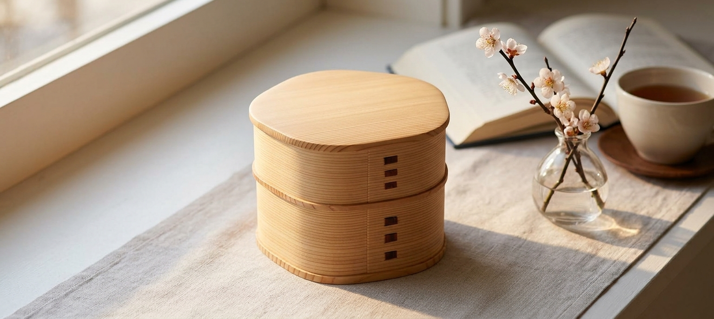

Same brand, same steam-bent Akita cedar, same hand-stitched cherry-bark seams -- but the four shapes aren't just style options. Two solve a real packing problem, one is built to be looked at more than used, and one is small enough to just hold. All four are sold today and made in Japan.
Most bento boxes are rectangles, which means anything you pack touches everything else unless you add plastic dividers. This one is bent into a "hango" shape -- named after the Japanese military mess kit it borrows its outline from -- with a concave waist pinched in at the middle and two rounded lobes swelling out at either end. Pack it and the shape does the sorting for you: rice naturally settles into one lobe, protein and vegetables into the other, with the waist keeping them from sliding together. It's the same brand's largest two-tier box, priced accordingly. Backed by 651 reviews averaging 4.6 stars across the ODATE MAGEWAPPA line (Amazon groups reviews across this brand's bento box variants, so this reflects the maker's overall track record rather than this exact shape alone) and 12 in stock at time of writing.

As an Amazon Associate, I earn from qualifying purchases.
No waist, no petal, no carving -- just a plain circle, twice stacked. That's deliberate: this is the listing to buy if what you actually want is what Akita cedar itself does, not a decorative silhouette. The wood's natural moisture-regulating property is a big reason magewappa exists as a lunchbox tradition at all -- it draws off excess condensation from hot rice, which is part of why rice packed in cedar tends to stay fluffier for longer than rice sealed in plastic. Proving it doesn't take a full box; a few well-spaced onigiri and a handful of sides with visible bare wood between them make the point better than a box packed edge to edge would. Same 4.6-star, 651-review brand track record as the rest of this line, though this specific "Slim" variant showed only 3 left in stock at time of writing -- worth checking before you plan around it.

As an Amazon Associate, I earn from qualifying purchases.
This box doesn't need food in it to make its case. Its whole silhouette is bent into a single asymmetric lobe -- a plum-blossom (ume) outline, not a full flower, just one gentle bulge breaking an otherwise plump, rounded-square shape. Ume blooms in the coldest weeks of winter, before cherry blossoms, which is why it became a Japanese symbol of quiet resilience rather than showy grandeur -- elegance (miyabi) and understated imperfection (wabi-sabi) in the same small object. It carries Amazon's Choice and the same 4.6-star, 651-review brand track record, at $87.84 with 9 in stock at time of writing.

As an Amazon Associate, I earn from qualifying purchases.
Every box on this page is closed with the same technique -- "sakuragawa-toji," cherry bark stitching sewn through the seam where the bent cedar wall overlaps itself, the visible proof a person bent this thin sheet of wood by hand and sewed it shut rather than gluing or stapling it. The other three boxes are large enough that the stitching is one detail among several; this single-tier "Himeko" is small enough -- about 4.7 inches across -- that the seam is most of what you notice, close enough to actually run a thumb over. It's the newest, smallest listing in this lineup and, at time of writing, has only 3 Amazon reviews (4.6 stars) -- we're including it for the seam and the scale, both visible in the photo, not for a long track record.
As an Amazon Associate, I earn from qualifying purchases.
None of these four is a better version of the others -- the hango box won't sit on a windowsill looking like an object the way the plum-blossom one does, and the plum-blossom box won't sort your lunch the way the hango one does. What ties them together is the material and the craft, not the shape: the same steam-bent Akita cedar, the same hand-sewn cherry-bark seams, from the same maker. What each one earns its place through is different -- a shape that solves a packing problem, a shape that gets out of the way and lets the wood do its job, a shape that's just beautiful to look at, and a shape small enough to hold. That's the actual range of what "a life with magewappa" can mean.
This page contains affiliate links -- if you buy through one, it costs you nothing extra and helps support this site. The "Slim" cylinder box showed only 3 units in stock and the Himeko box had only 3 Amazon reviews at time of writing; both are noted honestly above rather than implied otherwise. The 4.6-star, 651-review figure reflects Amazon's combined rating across the ODATE MAGEWAPPA brand's bento box variants, not a rating specific to any single shape shown here. The moisture-regulation property of Akita cedar is a commonly cited characteristic of magewappa woodware, not a manufacturer claim specific to any one listing.